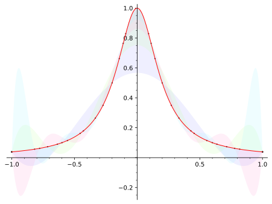

Have a working GitHub Codespaces environment to suitable for authoring and editing in PreTeXt.
Section2.1Setting up Codespaces
A Codespace is an authoring environment that lives in the “cloud”, that is, a virtual machine hosted by GitHub that has all of the software needed to create great accessible documents, accessible with just a web browser.
This coding environment uses a web version of Virtual Studio Code, an open-source editor, along with the PreTeXt community's custom plugins and software to get started authoring quickly.
PreTeXt is a markup language that captures the structure of textbooks and research papers.
PreTeXt is human-readable and human-writable.
PreTeXt documents serve as a single source which can be easily converted to multiple other formats, current and future.
PreTeXt respects the good design practices which have been developed over the past centuries.
PreTeXt makes it easy for authors to implement features which are both common and reasonable.
PreTeXt supports online documents which make use of the full capabilities of the Web.
PreTeXt output is styled by selecting from a list of available templates, relieving the author of the burden involved in micromanaging the output format.
PreTeXt is free: the software is available at no cost, with an open license. The use of PreTeXt does not impose any constraints on documents prepared with the system.
PreTeXt is not a closed system: documents can be converted to LaTeX and then developed using standard LaTeX tools.
PreTeXt recognizes that scholarly documents involve the interaction of authors, publishers, scholars, curators, instructors, students, and readers, with each group having its own needs and goals.
PreTeXt recognizes the inherent value in producing material that is accessible to everyone.
Section2.3PreTeXt is XML
Since PreTeXt uses the XML markup language, all content is structured in terms of elements. The root pretext element nests many other elements inside of it. This is accomplished by surrounding everything with a starting <pretext> tag and an ending </pretext> tag. (Folks with HTML experience will find this pattern familiar, akin to the “HTML” root element.)
Listing 2.3.1 is a very simple PreTeXt/XML document. (The first line is boilerplate that lets various programs know the rest of the file is XML, and the third-to-last line is an example of a comment that won't appear in the output.)
<?xml version="1.0" encoding="UTF-8"?>
<pretext>
<article>
<title>Hello world!</title>
<p>Welcome to PreTeXt!</p>
<!-- TODO: find something more to say... -->
</article>
</pretext>
Listing2.3.1.Source of a simple PreTeXt book project.
Section2.4Books and Divisions
There are several documents you can write in PreTeXt, such as <article>s and <slideshow>s. This tutorial will focus on <book>s.
A <book> typically includes <frontmatter>, and <backmatter>.
Between <frontmatter>, and <backmatter> are either several <chapter>s or <part>s. If used, <part>s are subdivided into <chapter>s. Then <chapter>s subdivide into <section>s, and <section>s can have <subsection>s.
Each of these subdivisions needs a <title>, and may have an <introduction> or <conclusion>.
Listing 2.4.1 puts some of these elements together for a simple PreTeXt project (information on the other elements will come in later sections).
<?xml version="1.0" encoding="UTF-8"?>
<pretext xml:lang="en-US">
<!-- (author configurations go in docinfo) -->
<docinfo>
<macros>
\newcommand{\R}{\mathbb R}
</macros>
</docinfo>
<book xml:id="my-great-book">
<title>My Great Book</title>
<subtitle>An example to get you started</subtitle>
<frontmatter xml:id="frontmatter">
<titlepage>
<author>
<personname>You</personname>
<department>Your department</department>
<institution>Your institution</institution>
</author>
<date>
<today />
</date>
</titlepage>
</frontmatter>
<chapter xml:id="chapter-welcome">
<title>Welcome!</title>
<introduction>
<p>This chapter is about the real numbers <m>\R</m></p>
</introduction>
<section xml:id="section-getting-started">
<title>Let's get started</title>
<p>Can you solve <m>ax^2+bx+c=0</m>?</p>
</section>
<section xml:id="section-learning-more">
<title>But wait, there's more!</title>
<p>Did you know that <me>x=\frac{-b\pm\sqrt{b^2-4ac}}{2a}</me>?</p>
</section>
</chapter>
<backmatter xml:id="backmatter">
<title>Backmatter</title>
<colophon>
<p> This book was authored in <pretext />. </p>
</colophon>
</backmatter>
</book>
</pretext>
Listing2.4.1.Source of a simple PreTeXt book project.
Section2.5Paragraphs, Lists, and Blocks
Within each division (chapter, section, etc., see Section 2.4) of your book, you likely want some content (e.g. what you're reading right now!).
Written content is usually structured as paragraphs, <p> for short. If you've ever written HTML, this tag may be familiar to you, but be warned: while PreTeXt is XML (Section 2.3), PreTeXt is not HTML! There is some overlap: you can emphasize words or phrases with <em> for instance. However, while HTML uses the full word “code” for its tag, PreTeXt uses the shortened <c> tag.
Note that these elements are all semantic: they express the meaning of content, not its presentation. For example, the word “semantic” was a <term>, we just defined, while we merely emphasized “meaning” with <em>. The presentation of these concepts may vary by output format, likely using some combination of boldface, italics, or underlining.
Heads up!
We'll talk about customizing presentation later, but it's important to remember that the PreTeXt community separates such “publication” decisions away from the work of “authoring” content.
For users coming from LaTeX, rest assured your mathematical formulas work in PreTeXt. Inline mathmode \(ax^2+bx+c=0\) is invoked with <m>ax^2+bx+c=0</m>, while display mathematics like
is available via <me>x=\frac{-b\pm\sqrt{b^2-4ac}}{2a}</me>. (Users from LaTeX will also appreciate that quotes are surrounded with <q> in PreTeXt to handle the different way quotation marks are handled in LaTeX vs most other markup languages.)
You may also have lists withinn paragraphs, ordered <ol> and unordered <ul>, nested as needed. Each list item is represented by <li>.
A single item.
An item with an ordered list.
First item.
Second item.
Of course, often you have important blocks of content to include, such as <definition>s or <claim>s.
Definition2.5.1.
PreTeXt is an uncomplicated XML language for describing scholarly documents.
Claim2.5.2.
PreTeXt is the language that will replace LaTeX for authors.
Such content is automatically numbered appropriately. Each of the blocks above is structured with a <statement>, and Claim 2.5.2 additionally features a <proof>.
Content is often “knowled”. A knowl is a piece of context-independent information that is useful to transclude elsewhere in the HTML build of your document. For example, in the HTML build for this document, the above proof is knowled by default, and clicking the referenced “Claim” in the previous paragraph expands its knowl to reveal the claim for the reader.
Note2.5.3.
Because this document was edited directly on GitHub using Codespaces, and served with GitHub pages, finding its source is simple: head to its repository 1  and find the corresponding source file 2 . Check the link out to see exactly how each claim, list, etc. in this chapter was marked up!
Section2.6Figures and Diagrams
Figure2.6.1.Photograph taken from AIM Press Release on braille, provided as a JPEG in the project assets directory.Figure2.6.2.Electronics Diagram generated with Tikz code
Figure2.6.3.Contour Plot generated from Asymptote code
Figure2.6.4.Work Cone generated from Asymptote code

Figure2.6.5.Polynomial approximations of \(f(x)=1/(1+25x^2)\) generated from SageMath codeFigure2.6.6.An implicitly defined 3D surface generated with SageMath code
Section2.7Interactives
Figure2.7.1.Right Triangle Paradox powered by GeogebraFigure2.7.2.Graph of \(ln(x^2+5)-3\) powered by DesmosFigure2.7.3.Intersection of two planes powered by CalcPlot3DFigure2.7.4.Implicit Differentiation exercises powered by CheckIt
The solution set is \(\left\{ \left[\begin{array}{c} -3 \, a + 2 \, b - 2 \\ -2 \, a + b - 2 \\ a \\ b \end{array}\right] \,\middle|\, a,b \in\mathbb R \right\}\text{.}\)
Obtaining these formats are as easy as running pretext build web and pretext build print respectively. PreTeXt supports other types of output as well, including Jupyter notebooks, ePub, and tacticle braille code.
You're encouraged to view authoring in PreTeXt as an investment: you may not need the braille output today, but the little extra thought and care required to author in PreTeXt will allow you to provide this version of your document to a blind student tomorrow.
Section2.10Wrapping Up
Go check back on the Codespace you created in Section 2.1. If it's up and running, you're ready to move on to the next section!